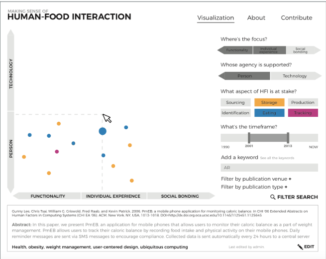
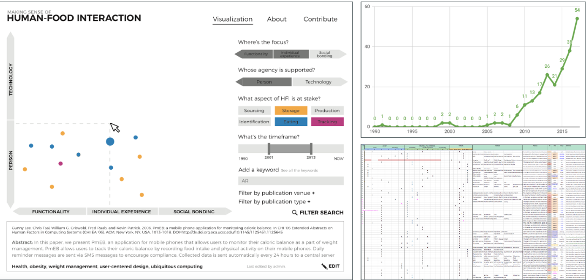

Bear with me if this is a slightly strange project, but I’d like to talk about our work at the intersection between food, technology and design. We are very interested in exploring how to support a more playful, social and embodied interaction with food, and about the role technology can play in this. Technology has long been playing a role in food practice. A clear example is the mass production of food. Technology has long been playing a role in food practice. Technology also supports us in growing food in a more automated way and it’s also being used to make eating experiences more interesting through multisensory immersive systems.
In the recent years, there has been a spike in interest on food in technology-related research. The graph to the right illustrates the amount of ACM publications per year with the keyword “food”. However, Human-Food Interaction is not yet well established as a research space, as other fields are, for example Human-Computer Interaction or Data Visualization. We are currently building a database of publications in the space of Human-Food Interaction as a way to characterize the field. As a way to see what we as a community are focusing on, how we are doing it, and what are we really missing. To support this, and to make that information accessible, we have developed a visualization app to allow a reading of the research space of Human-Food Interaction. The fact is that there has been a lot of research done around food interaction in recent years. We are investigating deeper into the technology through this landscape from database & trying to characterize the field of HFI.
By doing this work, we are realizing that a lot of work in Human-Food Interaction is focused on innovating in terms of efficiency, comfort, or even novelty. The question is: are there other values that should be taken into account when imagining the future of food-related technologies? Because beyond nourishing ourselves, food plays a rich spectrum of roles in our life. It is a source of cultural heritage, Social bondings are also an important value when it comes to food. Also materiality and embodiment, craft, skill, creativity. And as it always has playfulness too!
So taking all those values into consideration, we ask ourselves how could we design technologies that afford playful, social and embodied interactions with and through food?
One of the things we are currently looking at is the notion of handmade. We all agree that handmade food is cool… But why? We want to unpack what it its that makes handmade so compelling, and make sure we can embed this into the design of future food technologies. To explore this with other Interaction Design researchers, we will run a workshop at the Designing Interactive Systems conference later this June.
And of course, we are not only thinking about all this at a conceptual level. We are also designing artifacts and experiences around food, as a way to better understand what playfulness, social interaction and embodiment in this context. In other words, we are figuring out how to design future food technologies by engaging hands-on with design practice.
Ferran Altarri Bertran, Rosa Lutz
D3, HTML, CSS, PHP
Research through Design
Visualizing the landscape of Human-Food Interaction research, DIS 2018